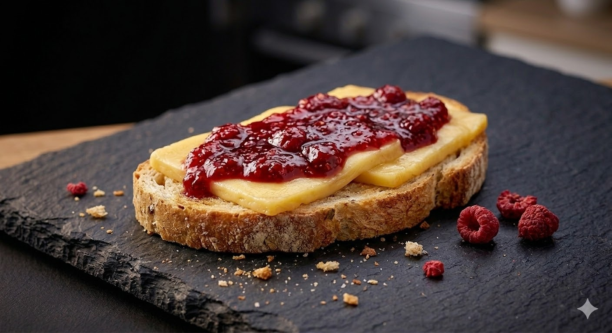
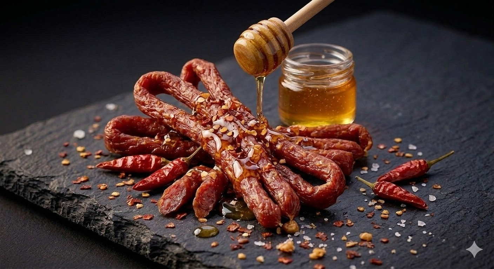
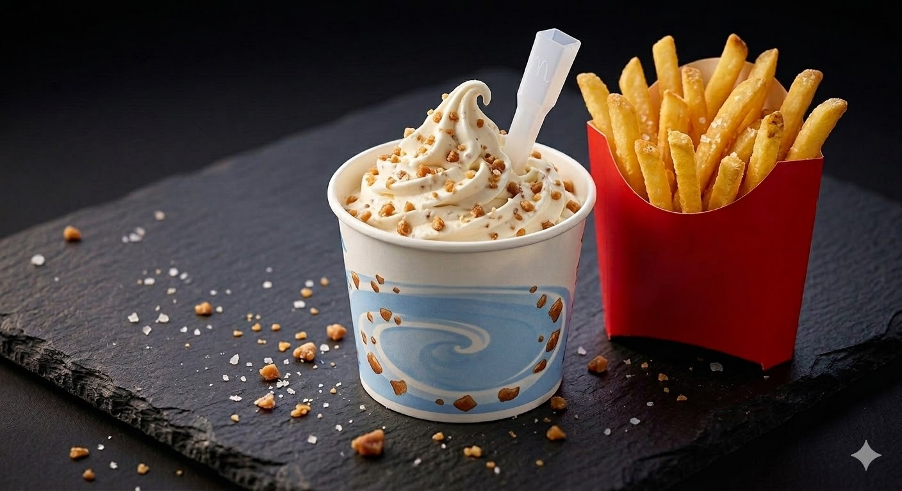
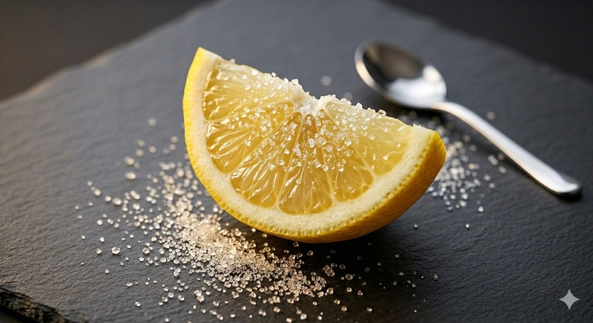
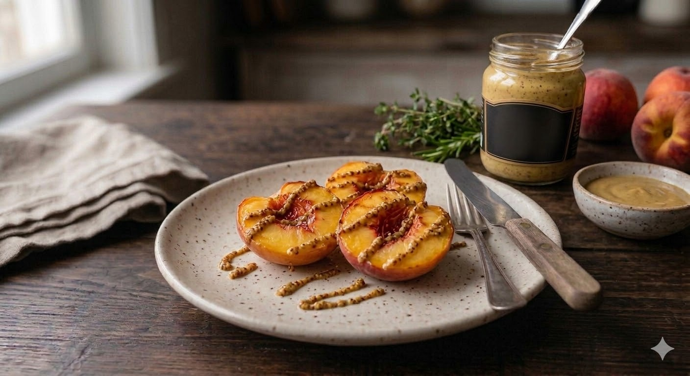
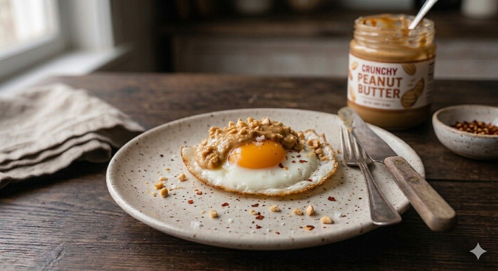
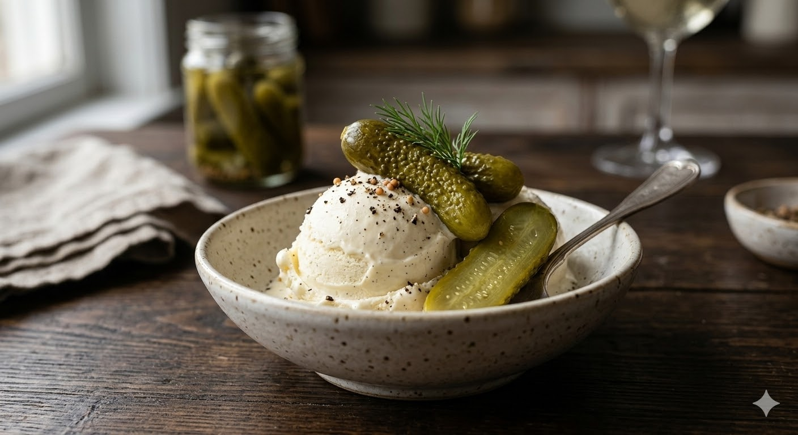
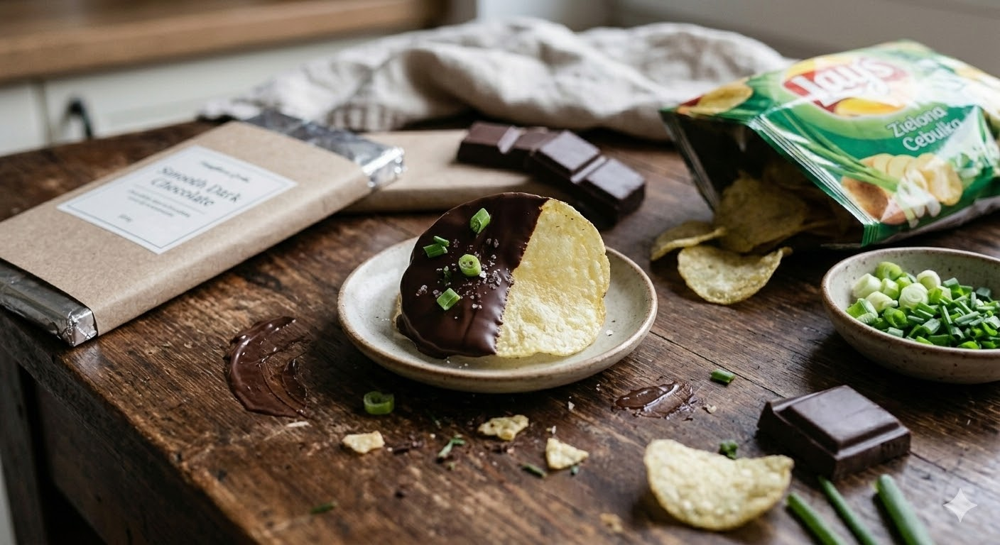
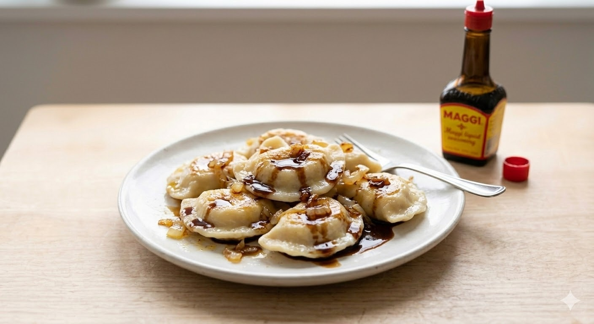
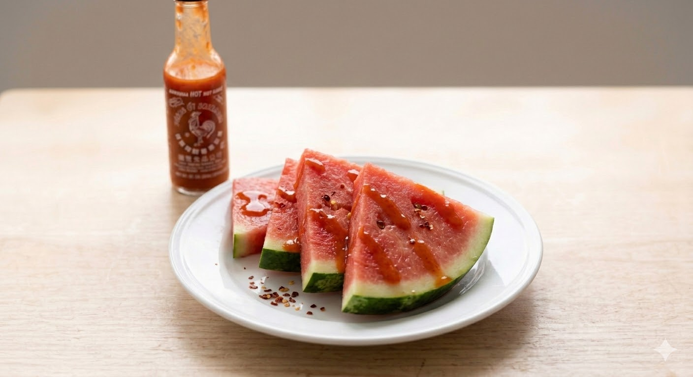

Cheese Sandwich with Strawberry Jam
Sweet and salty at the same time. Much better than it sounds.
Rating: 4/5
Would I eat it again? Yes
PERSONAL FOOD EXPERIMENTS
I have always loved testing weird food combinations. I often do it with my friends, and we make bets about what we will actually eat and what we will not. Below are some of the most interesting combinations I have tried.
Sweet + salty
Spicy + sweet
Cold + crunchy
Fun + risky
WHAT I HAVE TRIED
Hover over each image to see my opinion, rating and whether I would eat it again.

Sweet and salty at the same time. Much better than it sounds.
Rating: 4/5
Would I eat it again? Yes

Smoky, spicy and sweet. One of the best combinations here.
Rating: 5/5
Would I eat it again? Definitely

Crispy salty fries and sweet vanilla ice cream always work.
Rating: 5/5
Would I eat it again? Definitely

Very simple. Sugar balances the sourness of the lemon, making it surprisingly enjoyable to bite into.
Rating: 4/5
Would I eat it again? Yes

Interesting to try once, but not something I would really recommend. It might work better in some kind of salad.
Rating: 2/5
Would I eat it again? Probably not

Rich, creamy and surprisingly delicious.
Rating: 5/5
Would I eat it again? Definitely

Odd, but better than expected. I like how the different textures work together — crunchy pickle and soft ice cream.
Rating: 3/5
Would I eat it again? Maybe

Crunchy, salty, sweet and weirdly addictive.
Rating: 5/5
Would I eat it again? Definitely

Potato and cottage cheese dumplings with Maggi sauce. Tasty, but a little too salty for me.
Rating: 4/5
Would I eat it again? Yes, but with less Maggi

Fresh, juicy and spicy at the same time.
Rating: 3/5
Would I eat it again? Maybe
STILL ON MY LIST
I have not tried these yet, but they are next on my list. Some of them sound suspiciously good.
FUTURE FORM
If you have discovered a strange food combination that actually works, you could suggest it here. This is just a preview of a future form.
This form is currently a visual prototype.